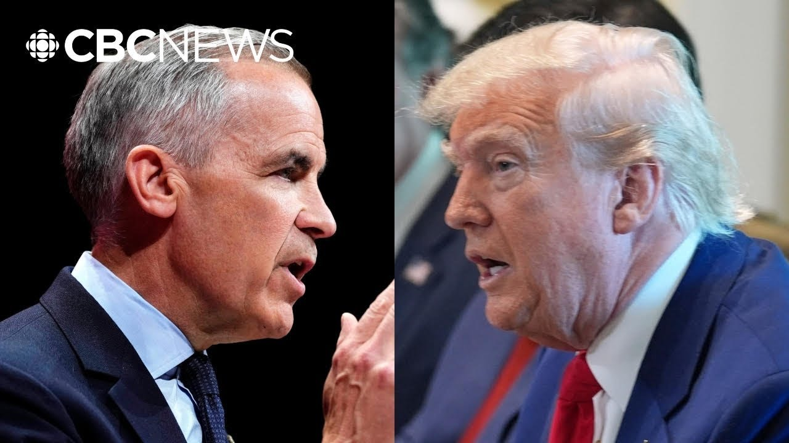

来B站一起耍【Global每日英语简报】
【卡尼如何与特朗普达成关税休战协议】
Summary: We know Canada's newly elected prime minister will meet quickly with Trump. Now, reaching a deal with him, that's another matter. It's a little more complicated.
摘要： 我们知道加拿大新当选的总理将很快与特朗普会面。但要与他达成协议，那就是另一回事了。这有点复杂。

⏱️ Estimated Reading Time: 5 min
So, Carney has three major steps to get through uh in order to arrive at this comprehensive trade and security pack that he's seeking.
因此，卡尼需要完成三个主要步骤，才能达成他所寻求的全面贸易和安全协议。
And you just uh alluded to them, the three Ps, personnel, process, and policy.
你刚才提到了这三个P：人员、流程和政策。
Um so, look to this meeting for early clues uh on how these negotiations might work.
因此，从这次会议中寻找这些谈判可能如何进行的早期线索。
Uh so, personnel is basically which people will lead this process.
人员基本上是指哪些人将领导这一进程。
After all, Carly Carney still has not has not named a cabinet.
毕竟，卡莉·卡尼还没有任命内阁。
uh we'll learn who the relevant ministers are.
我们将了解相关部长是谁。
Uh we'll presumably learn who the political lead will be on this, who's going to be the point person with the US, and whether he'll name a lead negotiator, maybe that's a non-political person.
我们可能会了解到谁将是政治负责人，谁将是与美国的对接人，以及他是否会任命一名首席谈判代表，可能是一名非政治人士。
We'll see.
我们拭目以待。
Uh the second thing is the process.
第二件事是流程。
Uh what mechanism will they use for these negotiations?
他们将使用什么机制进行这些谈判？
I I'll come back to that in a second cuz I mean it's it might sound a little boring, you know, procedural mechanics, but it really matters in this case.
我稍后会回到这一点，因为这听起来可能有点无聊，程序性机制，但在这件事上真的很重要。
And then there's policy.
然后是政策。
Uh what's on the table?
桌面上有什么？
Yeah, we know uh what Canada wants, the end of tariffs.
是的，我们知道加拿大想要什么，结束关税。
In an ideal world, you'd even get this cemented in law.
在理想情况下，你甚至可以将这一点写入法律。
Um, you know, setting stricter rules in US law for how a president could use tariffs, but that's complicated for a number of reasons.
在美国法律中为总统如何使用关税制定更严格的规则，但由于多种原因，这很复杂。
Uh, we we also know a lot of what the US wants.
我们也知道美国想要的很多东西。
It wants changes on Canadian dairy.
它希望改变加拿大乳制品政策。
It wants a change to Canada's digital services tax.
它希望改变加拿大的数字服务税。
Uh, changes to the rules for trade in auto components, especially to keep Chinese car parts out of North America.
改变汽车零部件贸易规则，尤其是将中国汽车零部件排除在北美之外。
Uh but a lot of this what's on the table uh and when will depend on the process.
但桌面上很多东西以及何时实现将取决于流程。
So to get to a destination you have to choose a path right there's uh you know the process and there's there's the slow lane there's the fast lane and then there's kind of the middle lane a combination of the two.
因此，要达到目的地，你必须选择一条路径，有流程，有慢车道，有快车道，还有介于两者之间的中间车道。
So let me explain the slow lane is the renegotiation of KUSMA the review.
让我解释一下，慢车道是对KUSMA的重新谈判审查。
It's supposed to happen starting next year.
这应该从明年开始。
Trump would like to do this sooner but it's more complicated than that.
特朗普希望更快完成，但这比那更复杂。
You can't just snap your fingers and start this overnight.
你不能一蹴而就，一夜之间开始。
uh just just to start the process of reviewing KUSMA takes like a year.
光是启动KUSMA审查流程就需要大约一年时间。
Under US law, there have to be like 270 days of public consultations and consultations with Congress.
根据美国法律，必须进行大约270天的公众咨询和与国会的磋商。
The faster option is to do a handshake deal.
更快的选择是达成握手协议。
Say, okay, Canada agrees to do this, Trump agrees to drop some tariffs, they reach a handshake deal, they put out a press release and everyone moves along.
比如，加拿大同意这样做，特朗普同意降低一些关税，他们达成握手协议，发布新闻稿，然后大家继续前进。
But the flaw with that approach is it doesn't mean much.
但这种方法的缺陷是它意义不大。
It's not ratified by Congress.
它没有得到国会的批准。
It's not embedded in law, which means it would be super easy for Trump to change his mind and break it later.
它没有写入法律，这意味着特朗普很容易改变主意并在以后打破它。
Uh then there's the hybrid approach uh the middle lane a bit from column A and a bit from column D B meaning you know you you have two sets of negotiations in the next few weeks or months you could announce some sort of handshake deal you resolve some details quickly and then you sit down again next year and deal with larger structural issues through KUSMA of course there's another factor at play and you alluded to it earlier uh US trade officials are super busy right now negotiating dozens maybe more than a hundred different arrangements cuz there's swamped.
然后是混合方法，中间车道，一部分来自A栏，一部分来自B栏，意味着在接下来的几周或几个月里进行两套谈判，你可以宣布某种握手协议，快速解决一些细节，然后明年再坐下来通过KUSMA处理更大的结构性问题。当然，还有另一个因素在起作用，你之前提到过，美国贸易官员现在非常忙，正在谈判几十甚至上百项不同的安排，因为他们应接不暇。
After all, Donald Trump has declared a trade war on the entirety of planet Earth.
毕竟，唐纳德·特朗普已经对整个地球宣战了贸易战。